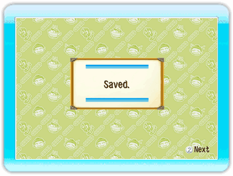
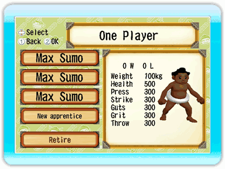

Hasta cuatro luchadores de sumo podrán unirse al establo.
Guardar
Los datos del luchador de sumo se guardarán de forma automática a medida que la partida avance.
|

|
Cargar
Sólo podrás elegir los datos de un luchador de sumo al principio de cada modo. No puedes cambiar de luchador dentro de un modo.
|

|
Durante el modo de un jugador, la partida se guardará de forma automática cada cinco combates en la pantalla del establo de sumo. No se guardarán los datos si sales de la partida durante un combate del torneo, así que es mejor que tengas esto en cuenta mientras juegas.